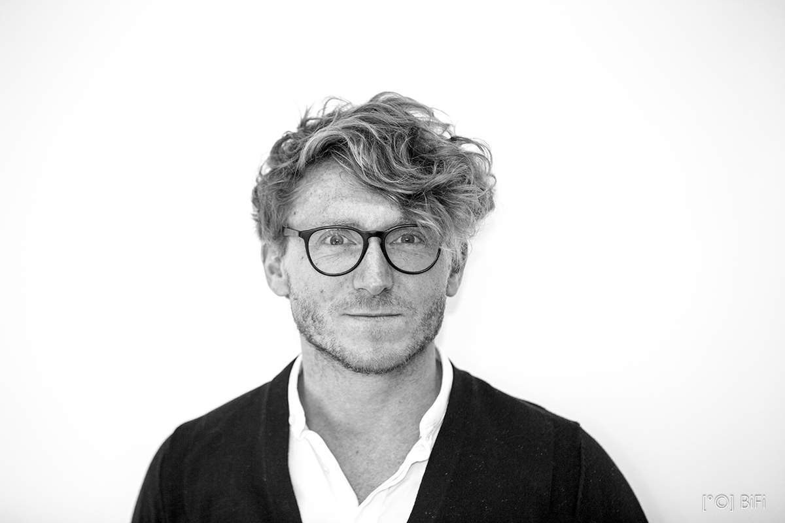
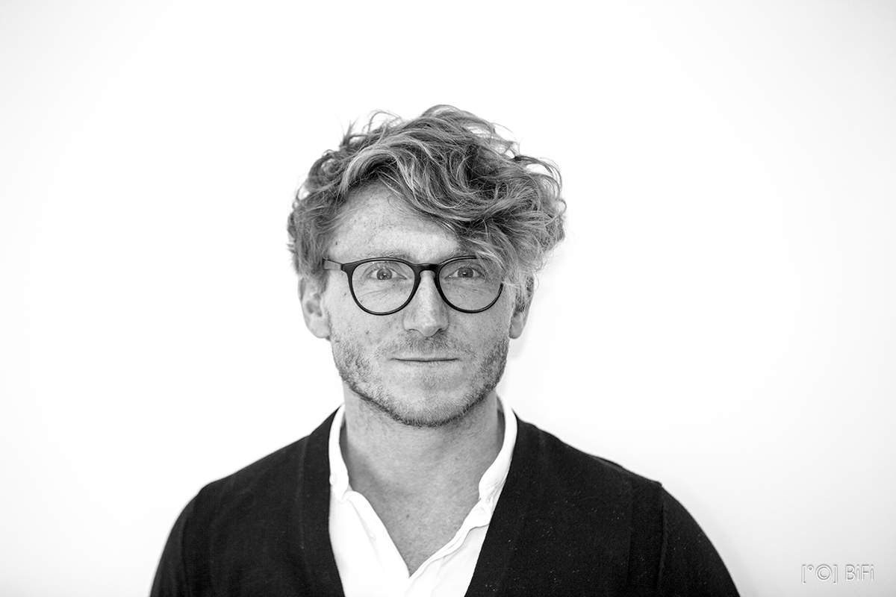

Oktober 2021
Xavier De Wil
Vennoot Architect bij MDW Architecture
 

Februari 2021
Wat is je huidige functie ?
Drie jaar geleden werd ik CEO van de volledige LIFE-groep : Nederland, Spanje, Kaapverdië en België. Ondertussen hebben we de voorbije jaren een vrij stevige reorganisatie doorgemaakt bij LIFE. De initiële strategie om alle landen onder één management te laten resorteren, is geëvolueerd naar een structuur met aparte bedrijven per land. Zo wordt een grote boomstructuur vermeden en krijgen de managers per land de mogelijkheid om mee partner te worden.
Vandaag ben ik dus CEO én partner van LIFE.be.
Welke impact heeft die nieuwe organisatiestructuur bij LIFE ?
We hebben nu veel kortere lijnen, waardoor we als management dicht bij de rest van het team en de projecten kunnen staan, wat ik persoonlijk erg belangrijk vind. We hebben heel hard gewerkt aan het DNA van LIFE. Het is voor mij essentieel dat ik en bij uitbreiding het volledige team er zich 100% achter kunnen zetten. Dit was een collectief werk waarbij alle medewerkers ook om input werd gevraagd.
Na 3 jaar reorganisatie is het heel fijn om eindelijk te landen en aan de slag te kunnen in een duidelijke lean & mean organisatie en verder te bouwen aan LIFE.be.
Je bent ingenieur – architect van opleiding, waarom heb je daarvoor gekozen ?
Ingenieur-architect was voor mij de ideale combinatie tussen het exacte en het creatieve. Bij uitbreiding denk ik dat net dat evenwicht tussen emotie en ratio hoogst waarschijnlijk de reden is dat ik geraakt ben waar ik nu sta.
Hoe ben jij je carrière gestart ?
Ik wilde als afgestudeerde ingenieur-architect zoveel mogelijk verschillende ervaringen opdoen. Ik zag dit als een verlengde van mijn studies. Ik heb in drie verschillende bureaus gewerkt. Ik heb eerst voor ingenieursbureau ESSA gewerkt voor het technische aspect, dan voor een kleinschalig architectenbureau Guerrilla Office Architects die met residentiële projecten bezig was en vervolgens bij het architectenbureau Osar om aan grootschalige projecten te kunnen werken.
Doe je zelf nog aan architectuur ?
Ik heb lang nog architectuurprojecten gedaan voor eigen rekening. Onlangs heb ik mijn ouderlijk huis afgebroken en een nieuwe woning voor mijn ouders ontworpen. Erg mooi om ze op die manier iets te kunnen teruggeven!
Hoe slaag je erin om al die zaken te combineren ?
Ik werk uiteraard vrij veel, maar zolang het niet als werken aanvoelt geeft het eerder energie.
Alles wat ik doe, doe ik met passie en ziel, waardoor ik 100% gefocust ben wanneer nodig.
Daarnaast kan ik ook perfect de switch maken naar ontspanning, vakantie of slaap waardoor ik ook wel erg goed kan opladen… Supercharging noemen ze dat! Dat is de enige manier dat ik kan doen wat ik doe. Anders zou dit niet haalbaar zijn.
Waarom ben je overgestapt naar de vastgoedsector ?
Architectuur was voor mij persoonlijk iets te beperkend. Dat is maar één insteek in de bouwwereld, terwijl er veel meer aspecten zijn. Als je voor een projectontwikkelaar gaat werken, kom je in aanraking met alle facetten van vastgoed en heb je potentieel een veel bredere impact op de bebouwde omgeving en het leven in het algemeen.
Hoe ben je geëvolueerd tijdens je parcours om te geraken waar je nu staat ?
Bij Extensa ben ik gestart met het idee dat ik het anders wilde doen. Ik hoorde de frustraties bij vrienden die een appartement gekocht hadden waarbij een budget voor een kleine keukenunit werd gegeven. Ook al zijn onze klanten in veel gevallen éénmalige klanten, bij mij passeert dat niet.
Ik wilde echt maken dat alle eindgebruikers of kopers tevreden zijn.  Ik ga dus volop voor een meer ethische benadering, waarbij de mogelijke ‘conflict of interest’ die er zou kunnen zijn tussen de eindgebruiker en de vastgoedwereld, geen kans krijgt. Een “LIFE” Cycle Cost approach is de enige correcte manier om investeringsbeslissingen te nemen, waarbij een correct evenwicht wordt gezocht tussen CAPEX en OPEX zodat we een positieve impact hebben op de levenskwaliteit van de uiteindelijke eindgebruiker.
Hoe ga jij om met het imago dat er heerst over vastgoed ?
We kunnen als ontwikkelaar klagen dat iedereen tegen ons is. Of we kunnen soms eens in eigen boezem kijken en ons afvragen waarom we soms kritisch bekeken worden. Ik ga voor de tweede optie.
Laat ons vooral niet vergeten dat de manier waarop we behandeld worden voor een groot deel zelf in de hand hebben. Wanneer je je redelijk opstelt naar stadsbesturen, aannemers of architecten toe, oogst je in de regel ook redelijkheid. Zo niet wordt het water alleen maar dieper.
Langetermijn relaties zijn voor mij de basis voor een duurzame bedrijfsvoering. Bijkomend probeer ik kritisch na te denken over de manier waarop vastgoedprojecten worden gerealiseerd.  Ik heb het enerzijds over werken in bouwteams waarbij de taakverdeling tussen architecten en aannemers wordt bijgesteld. Projecten waarbij elke partij optimaal wordt ingezet op zijn sterktes, dat is voor mij de toekomst van het bouwen.
Uiteraard is hierbij de rol van de bouwheer-ontwikkelaar cruciaal om ervoor te zorgen dat de belangen van alle partijen worden verdedigd en te vermijden dat de aannemer de overhand neemt ten koste van de architect en de architecturale kwaliteit in het algemeen.
Is het belangrijk dat je als projectontwikkelaar architect bent van opleiding ?
Dat is geen must, maar het kan wel een belangrijke meerwaarde zijn.
Bij LIFE hebben we een team van ongeveer zes projectontwikkelaars/projectmanagers die afhankelijk van hun interesse enkel het technische of ook de andere aspecten van de projecten opvolgen. Een gezonde combinatie van generalisten en specialisten, bij voorkeur met een verschillende achtergrond/opleiding en ervaring, zodat een maximale kennisdeling kan ontstaan.
Daarom ben ik zo tevreden met de nieuwe horizontalere organisatiestructuur. Ervoor zat ik bovenaan de boomstructuur en kon ik niet meer bezig zijn met de projecten zelf, waar toch nog steeds deels mijn meerwaarde ligt.
Wat is het succes van een bedrijf in groei ?
Ik geloof dat als CEO je de tijd moet nemen om een duidelijk kader te stellen voor je medewerkers. Als de processen voor elk project dezelfde zijn, kunnen medewerkers meer autonoom en vrijer werken. Een duidelijke kapstok is cruciaal, ook voor de nachtrust.
We hebben veel tijd gestoken in het uitwerken van processen en templates voor de opvolging van projecten. De ruggengraat van het bedrijf zijn de mensen enerzijds en de processen anderzijds. IT is uiteraard geen doel op zich maar is wel primordiaal ter ondersteuning en om elk project te kunnen monitoren.
Als je de opvolging in Excel bijhoudt, is dat vaak zeer onduidelijk en kan iemand die niet op het project werkt moeilijk relevante informatie terugvinden. Als projecten daarentegen op dezelfde manier gestructureerd zijn, kan een medewerker snel nuttige informatie vinden om hieruit te leren en hun lopende projecten te verbeteren.
Wat zijn de sleutelmomenten in je loopbaan ?
De Master in Real Estate enerzijds en anderzijds de overgang naar Home Invest Belgium (HIB).
Daar kwam ik voor de eerste keer in het Executive Management terecht. Ik heb een eigen portefeuille moeten uitbouwen én ook mijn team moeten samenstellen. Op mijn dertigste was dat wel stevig.
En ander sleutelmoment is de ontmoeting met Serge Hannecart. Mijn werk was nog niet klaar bij HIB. Het was dus wel een emotionele keuze om over te stappen naar LIFE.
Heb je tijdens je loopbaan tegenslagen gekend ?
Hout vasthouden, maar ik kom niet direct op grote tegenslagen die ik op mijn pad al ben tegengekomen. Misschien heb ik wel tegenslagen gehad, maar heb ik die in al mijn positivisme gewoon niet gezien (lacht). Ik kom niet direct op iets. Ik denk ook dat ik in het algemeen wel wat geluk heb in het leven wat me een bepaalde nederigheid meegeeft voor de toekomst. Ik geloof wel in karma dus aangezien we er een groot deel is dat we zelf niet bepalen kunnen we maar beter goed doen in de zaken waar we wel vat op hebben.
Hoe is je work-life balance ?
Mijn sociaal leven is zeker in orde. Je moet je uren wel verdelen. Ik heb veel ingezet de voorbije jaren om te staan waar ik voor mezelf wilde staan vooraleer aan een gezin te starten zowel op professioneel als financieel vlak.
Ik ben er wel diep voor gegaan. Als ik nu een kind krijg weet ik dat ik hem of haar niets zal moeten ontzeggen.
En intussen ben ik dus tijdens het nalezen van dit interview papa geworden… I proudly present Scottie to the world! üôÇ Als alles goed gaat zou ik nu alles veel meer moeten beginnen relativeren dus future is looking bright!
Hoe zie jij de vastgoedsector evolueren ?
Ik geloof heel hard in de diversiteit in de samenleving. Er zijn mensen die hun levensstijl zien als enige waarheid en deze weerspiegelen op andere mensen. Ik wil dit niet doen. Iedereen heeft zijn eigen leven.
Die diversiteit en verschillen qua identiteit vind ik essentieel en is voor mij een belangrijke inspiratie. We moeten niet allemaal op dezelfde manier wonen. Iedereen moet zijn eigen identiteit kwijt kunnen in zijn leefomgeving. Daar kan je het verschil in maken.
Bijvoorbeeld met studentenkoten. Mensen denken in eerste instantie misschien eerder aan ‘kippenkoten’. Ik geloof in het feit dat we veel verschillende typologieën moeten creëren in studentenhuisvesting, aangezien de studententijd een belangrijke periode is in de vorming en evolutie van elkeen. Sommige studenten hebben nood aan veel sociaal contact, anderen veel minder. De een is goed in een groep van zes iemand anders met dertig.
Daarnaast is diversiteit en inclusie erg belangrijk. Hoe kan je studenten bijvoorbeeld laten samenleven met ouderen. En welke impact kan je hebben op de sociale zekerheid daardoor. Duurzaamheid gaat voor mij niet enkel over de isolatiedikte van een wand maar over hoe je kan samenleven en hoe we kunnen mee bouwen aan een ‘sustainable society’. Hoe zorg je ervoor dat ons systeem betaalbaar blijft en dat er geen mensen worden uitgesloten, dat mensen duurzaam samenleven. Je moet veel breder denken.
Betaalbaarheid gecombineerd met flexibiliteit is iets wat me bezighoudt. Voor het project Horizon bij HIB hebben we ingespeeld op die variabele woonbehoefte én het feit dat je niet steeds die leegstaande extra slaapkamer wilt hebben. Deze lijn zet ik nu bij LIFE verder, ons co-living project ARC in Luik dat binnen een aantal maanden opgeleverd wordt is nog eens next level.
Hoe kun je meer levenskwaliteit creëren ? Dat gaat veel verder dan gewoon een mooi gebouw te realiseren.
Wat is het moeilijkste in je job ?
Iedereen meekrijgen in hetzelfde verhaal en de gezamenlijke lat op hetzelfde niveau leggen. Geen eenvoudige opdracht maar wanneer dat dan lukt, is dit wel het mooiste geschenk. Voor mij tevens het moment dat ik meer kan loslaten.
Wat voor manager ben je ?
Superkritisch. Waarschijnlijk een goede eigenschap maar niet altijd eenvoudig voor mezelf en voor de mensen waarmee ik werk. Ik ben er echter heilig van overtuigd dat we met een gezamenlijke kritische houding het verst geraken.
Ben je bewust bezig met je carrière en waar je naar toe wil ?
Dit klinkt misschien straf, maar ik ben nooit bezig geweest met wat de volgende stap zou kunnen zijn in mijn carrière. Ik ambieerde ook nooit een welbepaalde functie als Head of of CEO. De verschillende opportuniteiten zijn op mijn pad gekomen.
Ik heb nooit iets specifieks nagestreefd, maar doe telkens heel graag wat ik doe. Door iets niet bewust na te streven, komt het wel op je pad. Mensen vragen van alles en willen van alles, maar het komt wel, alles komt op zijn tijd.
Ik heb nooit geambieerd om CEO worden. Ik had nooit kunnen denken dat mijn handtekening zo belangrijk zou zijn. Moest ik dat geweten hebben had ik een gemakkelijkere handtekening gekozen (lacht).
Waar ben je het trotst op in je carrière ?
Ik denk het feit is dat mijn vader super fier is op mij. Daarin wilde ik me wel bewijzen. En dat is gelukt, het is bijna gênant (lacht).
Ik krijg voldoening van mensen die gelukkig zijn in de gebouwen die we hebben ontwikkeld. Ik wil graag een positieve impact hebben op de wereld, een betere wereld achterlaten als de versie die we hebben gekregen. En ervoor zorgen dat het team boven zich uit kan groeien.
Welke raad zou je geven aan een architect die CEO van een vastgoedbedrijf wil worden ?
Allereerst : Streef er niet naar om CEO te zijn, probeer vooral te doen wat je leuk vindt. Stel je verder vooral open om te begrijpen wat de beweegredenen zijn aan de andere kant van de tafel en laat je vooroordelen vallen. Hoe mooi het beroep van architect ook kan zijn, geloof mij vrij dat het leven in projectontwikkeling ook best aangenaam is.
Gesprek geleid door Archibald
Dank aan Toon Haverals & LIFE
Door het indienen van dit formulier ga ik ermee akkoord dat Archibald contact met mij opneemt en ik accepteer het privacybeleid van Archibald.